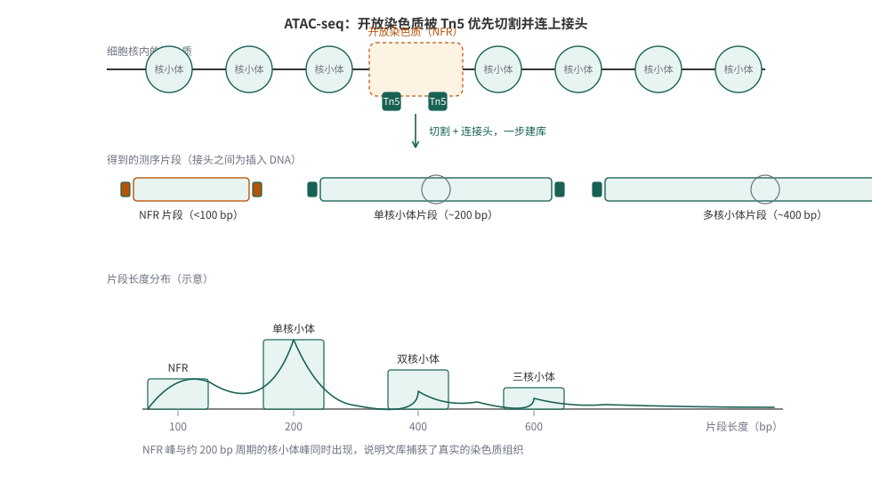
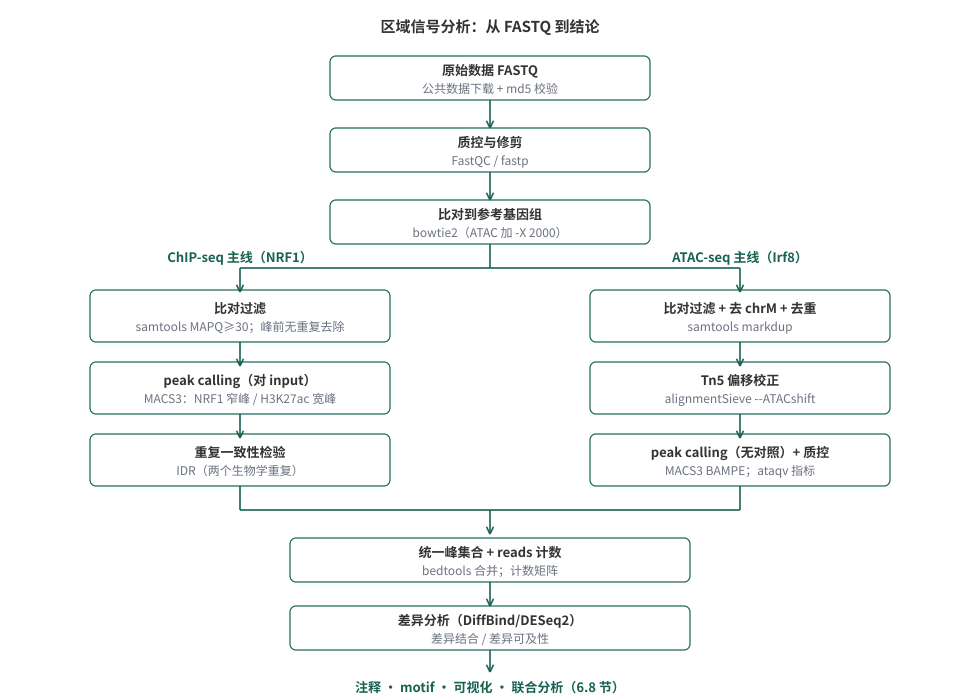
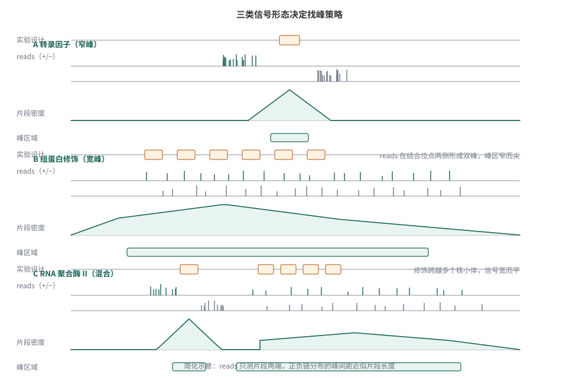
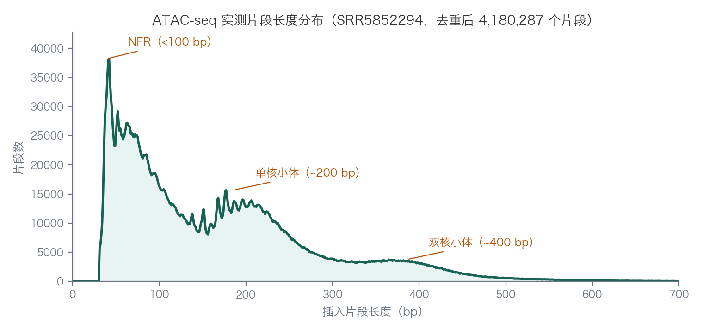

6 ChIP-seq与ATAC-seq：从富集信号到差异分析
本章提要
本章把 ChIP-seq 与 ATAC-seq 放在同一个”区域信号分析”框架中：先区分蛋白结合、组蛋白修饰与染色质可及性三类信号各自的生物学含义与实验设计，再沿两条完整案例走一遍分析流程——NRF1 转录因子的 ChIP-seq（野生型与 DNA 甲基化缺失的小鼠胚胎干细胞），以及 Irf8 敲除小鼠造血干细胞的 ATAC-seq。内容覆盖数据下载与校验、质量控制、比对、peak calling、重复一致性（IDR）、统一峰集合与计数、差异结合与差异可及性，最后是注释、motif 与可视化。阅读时请始终带着三个问题：信号相对什么的背景而言是”富集”？每一步处理在控制什么偏差？一组峰最终能支持什么结论、不能支持什么结论？
6.1 蛋白结合、组蛋白修饰与染色质可及性
转录调控研究常问三类问题：某个转录因子结合在基因组哪些位置？某种组蛋白修饰标记了哪些区域？哪些区域的染色质是开放的、可供调控蛋白接触的？ChIP-seq 回答前两类问题，ATAC-seq 回答第三类。三者测量的对象不同、对照的设计不同、信号形态也不同，但分析流程高度相似——都要经历质量控制、比对、寻找富集区域、跨样本比较这条主线。本章先分别认识这三类信号，再沿两条真实的分析案例把流程走通。
ChIP-seq：用抗体富集蛋白结合的 DNA
ChIP-seq（chromatin immunoprecipitation followed by high-throughput sequencing，染色质免疫共沉淀高通量测序）把免疫沉淀实验与二代测序结合：用针对目标蛋白的抗体，从打断的染色质中”拉出”与该蛋白结合的 DNA 片段，再对这些片段测序。于是测序 reads 在基因组上的分布，就反映了目标蛋白的结合位置——转录因子结合在哪里、组蛋白修饰富集在哪些区域。它是研究转录调控机制的核心工具。
ChIP-seq 实验主要包括以下步骤（测序技术的背景见 第 3 章）：
- 甲醛交联：用甲醛把蛋白与 DNA”锁”在当前的结合状态。交联时间因物种、组织、细胞类型而异：时间太短，蛋白-DNA 复合物松散；时间过长，复合物过于紧密，后续片段化和解交联都会困难。
- 染色质片段化：用超声波或酶切把染色质随机打断到约 200–600 bp。片段长度上限来自二代测序的读长——太长的片段只有两端能被测到。
- 免疫沉淀：用特异性抗体沉淀目标蛋白-DNA 复合物，解交联后纯化 DNA。这一步的特异性完全取决于抗体（见 6.2 节关于抗体质量的讨论）。
- 文库构建与测序：末端修复、连接接头、PCR 扩增后上机。PCR 扩增是偏差的来源之一，循环数应尽量低。

图 6.1 概括了从样本到测序数据的路径（图源：Park PJ. Nature Reviews Genetics 10:669–680（2009）1）。图中没有画出、但对分析同样关键的是对照：没有对照的”富集”无从谈起，这是下一节的主题。
CUT&RUN 与 CUT&Tag：不需要交联的替代方案
ChIP-seq 需要交联和大量细胞，这两点在实践中都常成为瓶颈。CUT&RUN（cleavage under targets and release using nuclease）2提供了另一条路线：不交联，把细胞核固定在磁珠上，让目标蛋白的抗体引导微球菌核酸酶（pA-MNase）到结合位点附近精确切割，只回收切割下来的 DNA 片段。因为反应在完整的细胞核内原位进行，背景信号远低于 ChIP-seq，通常十分之一的测序深度就能获得可比的质量；需要的细胞量也少得多。
CUT&Tag（cleavage under targets and tagmentation）3把切割换成了与蛋白 A 融合的 Tn5 转座酶（pA-Tn5）：Tn5 在切下邻近 DNA 的同时直接连上测序接头，省去了建库步骤。它同样不需要交联、背景低、可用很少的细胞（数百到数千个）完成实验，近年来在低细胞量与单细胞层面的应用中大量取代 ChIP-seq。
- ChIP-seq：需要交联，通常需要百万级细胞；抗体选择面最广，公共数据积累最多，分析工具链最成熟。
- CUT&RUN：不交联、背景低、深度需求约为 ChIP-seq 的十分之一；切割窗口小，峰形更锐利。
- CUT&Tag：不交联、pA-Tn5 一步完成切割加接头，细胞量需求最低；常配合大肠杆菌 spike-in 做归一化。
三者的数据处理流程与 ChIP-seq 高度相似（质控、比对、找峰），但峰形、背景模型和归一化策略有差异。本章以 ChIP-seq 的流程为主线，这些原则同样适用于另外两种技术。

ATAC-seq：用转座酶读出开放的染色质
ATAC-seq（assay for transposase-accessible chromatin using sequencing）回答的是另一类问题：哪些染色质区域是开放的。它不用任何抗体，也不交联：把连好测序接头的 Tn5 转座酶直接加入细胞核，Tn5 会优先插入没有核小体占据、可以被接触的 DNA 区域——它在切割的同时完成接头连接，一步建库4。
由此带来几个与 ChIP-seq 本质不同的性质：
- 测的是可及性，不是某个蛋白的位置。开放区域可能被多种转录因子和调控蛋白占据；ATAC-seq 告诉你”这里开着门”，但不直接说”谁在里面”。
- 不需要抗体，也就没有 input 对照。ChIP-seq 的对照是为了扣除背景分布；ATAC-seq 的背景由 Tn5 的插入偏好决定，用另外的方式校正（见 6.5 节）。
- 插入片段本身携带信息。无核小体区（<100 bp）、单核小体（约 200 bp）、多核小体片段的长度分布，直接反映染色质的组织状态。
- 需要的细胞量少（数百到五万个），实验流程最简单。
早期的开放染色质测定靠 DNase-seq 和 MNase-seq，ATAC-seq 因其简便和低细胞量需求成为现在的主流；三者测的都是”可接触性”，数据形态与分析方法相通。

图 6.3 概括了从开放染色质到测序文库的转换，以及片段长度与核小体组织的对应关系——这个对应关系正是 6.5 节质控指标的来源。
三类信号放在一起看
| 转录因子 ChIP-seq | 组蛋白修饰 ChIP-seq | ATAC-seq | |
|---|---|---|---|
| 测量对象 | 特定蛋白的结合位置 | 修饰标记的区域 | 开放染色质 |
| 是否需要抗体 | 是（成败关键） | 是 | 否 |
| 对照 | input（必需） | input（必需） | 无 input；用 Tn5 偏好校正 |
| 典型信号形态 | 窄而尖的峰 | 宽而平的峰（视修饰而定） | 开放位点处的峰 |
| 建议测序深度（ENCODE 现行） | 每重复 2000 万可用片段 | 窄峰型 2000 万 / 宽峰型 4500 万 | 每重复 2500 万条去重后非线粒体 reads |
表 6.1 三列对应本章的三个分析对象：6.2—6.4 节以转录因子 NRF1 的 ChIP-seq 为主线（组蛋白修饰 H3K27ac 作为宽峰对照），6.5 节引入 ATAC-seq 案例，6.6—6.8 节把两类数据汇入同一套统计与解释框架。
6.2 实验对照、重复与主案例设计
对照设计：input、IgG 与组蛋白泛抗体
要识别 ChIP 样本中的富集区域，必须知道”如果不做免疫沉淀，reads 会怎样分布”——也就是背景分布。Input 对照是最常用的答案：取打断后的染色质，在加抗体免疫沉淀之前直接建库测序。它经历了与 ChIP 样本相同的片段化、建库过程，因此能同时反映打断偏好、GC 偏好和拷贝数差异。
其他对照策略各有局限：
- 模拟 IP（mock IP）：走完全部流程但不加抗体；
- 非特异性抗体（如 IgG）：用不结合染色质的抗体。
这两种对照得到的 DNA 量少、复杂度低，并不能真实反映背景分布，一般不推荐作为主对照。研究组蛋白修饰时，识别 H3 或 H4 的泛抗体是另一种常用对照——它在捕获修饰的同时也捕获了核小体的整体分布。
为什么背景这么重要？因为多条偏差来源都会让某些区域”看起来富集”：
- 打断不均：致密的异染色质比开放的常染色质更难打断，即使 input 样本中其覆盖也偏低；
- GC 与 PCR 偏好：GC 含量高的片段扩增效率不同，背景分布与基因组 GC 含量相关，哺乳动物常染色质区的 CpG 岛尤其明显；
- 比对偏好：重复区域的 reads 难以唯一定位，覆盖天然偏低（见 第 4 章）；
- 拷贝数变化：肿瘤样本或细胞系中扩增的区域会产生更多 reads，看似”富集”，实为基因组本身的差异。
input 对照能扣除打断、GC、建库带来的系统性偏差，但它不能创造信噪比——抗体不好，ChIP 信号本身就弱，任何对照都救不回来。同样，input 也不能修正拷贝数变化的全部影响。判断一个 ChIP-seq 数据是否可信，要从对照、抗体、重复三个维度一起看。
抗体质量：实验成败的第一道关
ChIP-seq 的特异性完全依赖抗体。系统性评估的结果并不乐观：modENCODE 项目检测了 147 种商品化组蛋白修饰抗体，约 22% 未通过 ChIP 特异性检验，其中大部分还标称为 “ChIP 级”5。同一蛋白的不同抗体可能识别不同表位，在基因组不同位置的暴露程度不同，可能给出不一致的富集图谱（单克隆抗体尤其如此）。
实际选择抗体时，核验这几件事：厂商是否提供 ChIP 或 ChIP-seq 应用层面的验证数据；能否用 Western blot 确认条带特异；有条件时用敲低或敲除样本验证信号消失。ENCODE 的抗体验证标准（genetic, orthogonal, independent）可以作为参考框架。
测序深度、文库与重复设置
需要多少 reads？ 这取决于基因组大小和信号类型：窄峰（转录因子）与宽峰（多数组蛋白修饰）需要的深度不同。ENCODE 现行标准以”可用片段”（去除重复与低质量后的 fragments）计：转录因子 ChIP-seq 每个重复建议 2000 万，窄峰型组蛋白修饰 2000 万，宽峰型（如 H3K27me3、H3K36me3）4500 万注：ENCODE 数据标准页。这比本书上一版教程引用的”哺乳动物转录因子 3000 万、组蛋白修饰 6000 万 raw reads”（当时按原始 reads 计）口径更新——行业从”数原始 reads”转向”数可用片段”。input 对照建议测序到与 ChIP 样本相当的深度。
单端还是双端？ 对大多数 ChIP-seq，50 bp 单端测序已足以定位结合位点；较长的 reads 与双端测序能提高唯一比对率，在研究重复区域结合时才成为必要。早期文献”必须双端”的说法针对的是当时的技术条件。
生物学重复是必需的。 技术重复（同一文库再测序）只能评估测序环节的变异；要评估生物变异、并让 6.6 节的重复一致性检验有据可依，需要的是生物学重复（不同的培养物或个体）。每个条件至少两次重复是底线，三次及以上更稳妥；input 至少一次。重复之间的不一致会在下游分析中直接暴露（见 6.6 节），这是 ChIP-seq 质控的重要防线。
主案例：NRF1 与 DNA 甲基化的竞争
本章第一条例线来自一个具体的生物学问题：DNA 甲基化是否阻挡转录因子的结合？ 如果某些转录因子不能结合甲基化的 DNA，那么在去除甲基化的细胞里，它们应该出现新的结合位点。NRF1 就是这样的因子6。
实验设计：野生型小鼠胚胎干细胞（WT）与 DNA 甲基转移酶三敲除细胞系（Dnmt1/3a/3b triple knockout，TKO）中，分别做 NRF1 的 ChIP-seq（各两个生物学重复）、组蛋白修饰 H3K27ac 的 ChIP-seq（各两个重复），并各配一个 input。论文还配套了 DNase-seq（开放的染色质区域）与 RNA-seq——多组数据互相印证正是这类研究的常见做法。
这 10 个样本的原始数据公开在 GEO（系列号 GSE67867）与 ENA（项目 PRJNA281090）：
| 样本 | GEO 编号 | SRA 编号 | 原始 reads |
|---|---|---|---|
| NRF1_CHIP_WT1 | GSM1891641 | SRR2500883 | 40,570,927 |
| NRF1_CHIP_WT_2 | GSM1891642 | SRR2500884 | 40,365,286 |
| H3K27AC_CHIP_WT1 | GSM1891651 | SRR2500893 | 41,972,346 |
| H3K27AC_CHIP_WT2 | GSM1891652 | SRR2500894 | 40,822,025 |
| NRF1_INPUT_WT | GSM1891643 | SRR2500885 | 22,773,779 |
| NRF1_CHIP_TKO_1 | GSM1891644 | SRR2500886 | 32,306,980 |
| NRF1_CHIP_TKO_2 | GSM1891645 | SRR2500887 | 45,342,909 |
| H3K27AC_CHIP_TKO_1 | GSM1891653 | SRR2500895 | 50,829,570 |
| H3K27AC_CHIP_TKO_2 | GSM1891654 | SRR2500896 | 45,485,455 |
| NRF1_INPUT_TKO | GSM1891646 | SRR2500888 | 24,937,026 |
表 6.2 可以读出实验设计的对称性：因子（NRF1/H3K27ac）× 基因型（WT/TKO）× 重复，再加两个 input。本章教程实际下载并分析了其中 WT 侧的三个样本（NRF1 两个重复与 input），TKO 侧的分析命令完全同构。
下载原始数据
第 5 章已经介绍过从 GEO/SRA 获取数据的基本流程（GSE/GSM/SRR 的层级关系、SRA Toolkit 的用法，见 5.2 节）。这里补充一个对批量下载很好用的在线工具，以及一个重要的校验习惯。
SRA Explorer（sra-explorer.info）可以把一个 GSE/SRP 号展开成所有样本的下载清单，并为每种下载方式生成现成的链接或命令。注意：网站首页搜索框里预置的示例编号（GSE30567、PRJEB8073 等）只是演示用的别人的数据，检索自己的数据请输入本章的 GSE67867。
把 GSE67867 输入搜索并勾选本章 10 个 SRR 样本后，网站可以生成多种输出：
- FASTQ 下载链接清单：ENA 上每个 run 的直链；
- curl/wget 批量下载脚本：逐个下载全部 FASTQ；
- Aspera（ascp）下载脚本：走高速传输协议，大批量时明显更快；
- 带友好文件名的清单、bcbio 项目文件等其他格式。

图 6.4 是勾选样本后的列表。以其中的 Aspera 方式为例，生成的命令形如：
ascp -QT -l 300m -P33001 -i ~/.aspera/connect/etc/asperaweb_id_dsa.openssh \
era-fasp@fasp.sra.ebi.ac.uk:vol1/fastq/SRR250/005/SRR2500885/SRR2500885.fastq.gz .
ascp -QT -l 300m -P33001 -i ~/.aspera/connect/etc/asperaweb_id_dsa.openssh \
era-fasp@fasp.sra.ebi.ac.uk:vol1/fastq/SRR250/003/SRR2500883/SRR2500883.fastq.gz .
ascp -QT -l 300m -P33001 -i ~/.aspera/connect/etc/asperaweb_id_dsa.openssh \
era-fasp@fasp.sra.ebi.ac.uk:vol1/fastq/SRR250/003/SRR2500884/SRR2500884.fastq.gz .
如果不用 Aspera，ENA 的 https 直链也可以直接下载。ENA 的 FASTQ 路径有固定规律，本章三个 WT 侧样本：
路径规则是 vol1/fastq/<SRR 前六位>/<三位零填充的尾号>/<SRR 号>/<SRR 号>.fastq.gz（更长的编号会有两级填充，直接用 SRA Explorer 生成最稳妥）。批量下载可以写成循环：
本书写作时的真实经历：分段并行下载时，两个 FASTQ 文件字节数与服务器报告完全一致，gzip -t 却报 CRC 错误——下载过程中内容被损坏，大小检查根本发现不了。ENA 为每个文件提供官方 md5（run 页面的 fastq_md5 字段），下载后应当核对：
# 示例：核对 SRR2500883（期望值来自 ENA run 页面）
md5sum SRR2500883.fastq.gz # macOS 为 md5 -q
gzip -t SRR2500883.fastq.gz && echo OK大小正确不等于内容正确；校验和通过才算拿到数据。
6.3 ChIP-seq 预处理与质量评估
分析流程总览
ChIP-seq 的计算分析可以概括成下面的流程（图见下）：
- 原始数据质控：检查测序质量、接头污染、GC 分布（见 3.7 节）；
- 修剪与过滤：去接头、去低质量碱基（见 3.8 节）；
- 比对：把 reads 定位到参考基因组（见 第 4 章）；
- 比对后处理与质控：过滤低质量比对、检查比对率与复杂度；
- peak calling：寻找相对 input 显著富集的区域（见 6.4 节）；
- 重复一致性检验：IDR（见 6.6 节）；
- 差异分析与下游解释：统一峰集合、计数、注释与 motif（见 6.7 节与 6.8 节）。

如 图 6.6 所示，两条主线共用质控与比对，在专属处理环节分叉后汇入同一套统计框架；其中第 1—3 步对所有高通量测序数据都是共通的，本章只讲与 ChIP-seq/ATAC-seq 相关的判断点；第 5 步起才是区域信号分析特有的内容。
准备分析环境
第 2 章安装过 conda/mamba（见 2.2 节的软件环境配置）。本章全部命令行工具可以用一个环境装齐。把下面的内容存为 ch06_env.yaml，然后 micromamba create -n ch06 -f ch06_env.yaml（conda 用户用 conda env create）：
- IDR 与 numpy：bioconda 的 IDR 2.0.4 与 numpy≥1.24 不兼容（运行时报
numpy has no attribute 'int'），环境里必须固定numpy<1.24，或为 IDR 单独建环境。 - FastQC 0.13：FastQC 新版为 Python 重写，命令行参数以长参数为准（
--outdir、--threads）；旧脚本的-o、-t短参数不再可用。本文统一用长参数。
R 侧差异分析用 Bioconductor 的 DiffBind（micromamba create -n ch06r -c conda-forge -c bioconda bioconductor-diffbind，会一并装好 R）；注意 conda 渠道的 DiffBind 可能需要补装 bioconductor-genomeinfodb 才能启用黑名单功能。
原始数据质控：FastQC 与 MultiQC
FastQC 的通用指标（每碱基质量、接头含量等）已在 3.7 节讲过。对 ChIP-seq，每条 reads 的 GC 含量分布值得单独看：复杂度高的文库中 reads 来自大量随机片段，GC 分布应接近正态；偏离往往提示扩增偏好或污染。但也要结合实验对象判断——
富集的 DNA 片段反映目标蛋白的序列偏好。如果转录因子偏好结合 CpG 岛或低复杂度区域，GC 分布本来就会偏离”标准正态”；先看过表达序列（接头二聚体、 adapters）再看 GC，过滤后复查，不要孤立下结论。
过滤用 fastp（自动检测接头、按质量修剪、支持多线程）：
fastp 生成的 HTML 报告包含过滤前后全部指标。本书实际运行（每个样本取前 100 万条 reads 的小子集）的结果：
SRR2500883: 1,000,000 -> 967,181 reads（保留 96.7%），q30 比率 0.981
SRR2500884: 1,000,000 -> 968,212 reads（保留 96.8%），q30 比率 0.981
SRR2500885: 1,000,000 -> 965,541 reads（保留 96.6%），q30 比率 0.981这批公共数据质量很好（可能是作者上传前已过滤的版本），过滤前后差异不大；自己的新数据上这一步的差异通常更明显。过滤后用 FastQC 复查：


图 6.8 从上到下：每碱基质量值分布、碱基组成、过表达序列（左：过滤前，右：过滤后）、GC 含量分布（左：过滤前，右：过滤后）。GC 异常与过表达序列常常是同一个来源——接头或引物污染，过滤后一起恢复正常。
比对与比对结果检查
比对的算法原理（种子扩展、BWT/FM 索引）与工具选择已在 第 4 章展开。ChIP-seq 的 reads 来自随机打断的基因组 DNA，用 Bowtie 2 或 BWA 这类短序列比对工具即可；这里只讲本章链条里需要的几个决定。
参考基因组：用与研究匹配的版本。本章案例是小鼠数据，用 UCSC 的 mm10（4.2 节讨论过参考基因组的来源与版本问题）：
构建完成后得到 6 个以 mm10 为前缀的 .bt2 文件；比对时用 -x 指定这个前缀。
MAPQ 阈值：4.6 节介绍过 MAPQ 的含义。ChIP-seq 惯例是只保留唯一比对的 reads，实践中用 samtools view -q 30 过滤（Bowtie 2 中 MAPQ 30 通常对应唯一比对）。过滤值要与后文报告口径一致——正文说 30，命令就是 -q 30。
比对模式：Bowtie 2 默认的 end-to-end（全局）模式要求整条 reads 都参与比对，不做修剪；--local（局部）模式会把 reads 两端低质量部分剪掉换取更高得分。

对随机打断、质量不错的 ChIP-seq 数据，默认的 end-to-end 即可；local 模式更适合 reads 质量差或期望存在融合/重排的场景注：图示来自 Bowtie 2 手册。
比对加过滤一条命令完成（单端数据）：
#!/usr/bin/env bash
for r in SRR2500883 SRR2500884 SRR2500885
do
bowtie2 -x mm10 -p 12 -U clean_data/${r}.clean.fastq.gz 2> ${r}.bt2.log \
| samtools view -h -@ 6 -bS -q 30 \
| samtools sort -@ 6 -o align/${r}.q30.bam
samtools index align/${r}.q30.bam
samtools flagstat align/${r}.q30.bam > align/${r}.flagstat.txt
done-x mm10 指索引前缀；-U 表示单端输入（双端用 -1/-2）；samtools view -q 30 丢弃 MAPQ<30 的比对，-h 保留头部信息，排序后建索引以便快速按区域读取。本书实际运行（小子集）的比对率：
SRR2500883 (NRF1 ChIP WT1): 96.44% overall alignment rate
SRR2500884 (NRF1 ChIP WT2): 96.16% overall alignment rate
SRR2500885 (input): 98.69% overall alignment rate拿到 BAM 后，先做三件事再进入找峰环节：
- 看比对率：
grep "overall alignment rate" *.bt2.log。通常应 >70%；低于 50% 要停下来查原因（污染、参考基因组选错、读取质量）——6.5 节的 ATAC 案例里就有这样一个真实样本。 - 看唯一比对比例：ChIP 样本因富集而略低于 input 是正常现象（被富集的 reads 聚集在特定位置，重复比对随之增加）；过低提示文库复杂度问题。
- 看冗余率：MACS 运行日志会报告（见下节），过高说明 PCR 过度扩增或起始量不足。
6.4 Peak calling 原理与参数
信号类型决定找峰策略
peak calling 的目标，是在全基因组上找出 ChIP 信号相对背景显著富集的区域。目标蛋白的类型决定了信号的形态：
- 转录因子：窄而尖（sharp/narrow）。转录因子识别特定序列基序，富集片段集中在基序周围。由于测序 reads 只来自片段两端，正负链的 reads 在结合位点两侧形成特征性的双峰分布，两峰之间的距离近似片段长度。
- 组蛋白修饰：多数宽而平（broad）。修饰覆盖整个核小体甚至跨越多个核小体，信号表现为成百上千 bp 的宽区域。
- RNA 聚合酶 II：混合形态（mixed）。启动子处的暂停信号是窄峰，基因内部的延伸信号是宽峰。

图 6.10 从上到下展示了三类信号：最上层是真实的结合设计，中间是正负链 reads 的分布（注意窄峰信号的双峰结构），最下层是片段密度与最终被识别的峰区域。
并非所有组蛋白修饰都是宽峰。ENCODE 对组蛋白修饰的分类：
| 信号类型 | 典型修饰 |
|---|---|
| 窄峰（narrow） | H3K4me3、H3K27ac、H3K9ac |
| 宽峰（broad） | H3K27me3、H3K36me3、H3K9me3 |
窄峰修饰标记活跃的启动子/增强子，宽峰修饰标记大范围的抑制或转录区域——峰形态本身就承载生物学含义。这也直接影响工具与参数的选择：窄峰用点式找峰，宽峰用区域式找峰（MACS 的 --broad，见下文）。
Peak calling 的一般逻辑
多数 peak caller 遵循同一框架：沿基因组滑动窗口，计算 ChIP 样本相对 input 背景的 reads 富集程度，用统计模型评估显著性，再对全基因组成千上万个窗口做多重检验校正。
具体拆开是四步：
- 富集计算：窗口大小通常取估计片段长度的两倍；ChIP 与 input 的 reads 数各自按文库总量归一化后比较。
- 显著性：用泊松或负二项分布把观测 reads 数与背景模型的期望比较，得到 p 值。模型不必复杂——简单模型在这类数据上的表现并不差。
- 多重检验校正：基因组上检验了数万个窗口，总有一些 p 值”碰巧”很小；用 FDR（q 值）控制假发现。有 input 时还可以交换 ChIP 与 input”反向找峰”来估计经验 FDR。
- 阈值选择：p/q 值阈值决定喊多少峰。宽松的阈值多喊（利于 6.6 节的重复检验），严格的阈值少而准（利于最终报告）。重要的是：阈值选择本身就是分析决定，报告结果时应同时说明所用阈值；单纯比较两个不同阈值下的峰数量没有意义。
MACS3 实操：NRF1 窄峰与 H3K27ac 宽峰
MACS 是使用最广的 peak caller7，现行版本为 MACS3注：项目主页，基础 callpeak 语法与 MACS2 一致。对窄峰数据：
-t 是 ChIP 样本，-c 是 input 对照，-g mm 告诉 MACS 基因组大小（小鼠有效基因组约 1.87 Gb），-q 0.05 为 FDR 阈值，-n 指定输出前缀。本书实际运行（WT 侧三个样本全量数据）：
NRF1_WT1: 10,027 个峰（q<0.05）
NRF1_WT2: 15,306 个峰（q<0.05）两个重复各自的峰数量不同是正常的（深度、信噪比有差异），重复间一致性的判断交给 6.6 节的 IDR，而不是直接比较数量。
MACS 运行日志里的两个数字值得留意：
#1 filter out redundant tags at the same location by allowing at most 1 tag(s)
#1 Redundant rate of treatment: 0.10
#1 Redundant rate of control: 0.02MACS 默认每个位置最多保留 1 条 read（--keep-dup 1），日志会报告因此去掉的冗余率（本例 ChIP 10%、input 2%）。这不是”删除所有重复”——--keep-dup all 可以全部保留，--keep-dup auto 让 MACS 按二项分布自估。测序深度高的今天，同一位置的 reads 也可能来自真实的不同片段；对复杂度好的文库，是否去重、去多少，是应当显式记录的分析决定（ENCODE 流程会做重复标记，6.5 节的 ATAC 数据则常规去重）。
对宽峰数据加 --broad：
主要输出文件是 NRF1_WT1_peaks.narrowPeak（窄峰）或 *_peaks.broadPeak（宽峰），BED 兼容格式，每行一个峰：染色体、起点、终点、名称、得分（积分越高越显著）、链、fold enrichment、-log10(p)、-log10(q)、相对峰顶位置。
- SPP：ENCODE 转录因子流程长期使用的 R 包；
- Peakzilla：为高分辨率转录因子数据设计，仍可用但社区使用已少；
- HOMER findPeaks、GEM：与其注释/motif 工具链一体的方案。
工具版图会变，“窗口—背景—显著性—校正”的框架不变；换工具时重点核对它对重复 reads、片段长度估计和背景模型的处理。
峰的过滤与质量评估
拿到峰之后、下结论之前，还有两类清理与检查。
黑名单区域：ENCODE 敟计了各物种中在任何 ChIP-seq 数据（包括 input）里都异常高信号的区域——多在着丝粒、端粒附近的人工富集区——并发布为 blacklist 文件注：下载地址。落在黑名单里的峰应直接剔除，线粒体染色体（chrM）上的峰同理：
饱和度检查：把 reads 逐步下采样、分别找峰，画出”reads 数—峰数”曲线。曲线进入平台期说明深度足够再挖峰；仍在增长则说明还有峰没被发现。本书案例在 2000 万 reads 处已接近饱和（原教程结果）。
浅数据的教训：本书对小子集（100 万 reads）试跑宽松阈值（-p 1e-2）时，MACS 喊出了 30 多万个”峰”——reads 太少、背景太薄时，大量随机波动都能”显著”。这直接说明：找峰结果的质量受深度约束，重复检验（IDR）和饱和度分析比单看峰数量更可靠。
6.5 ATAC-seq 专属处理与质控
前四节的框架对 ATAC-seq 同样适用，但有几个环节不能照搬 ChIP-seq 的做法。本节讲清楚差异，并完成第二条案例线。
与 ChIP-seq 流程的同与不同
| 环节 | ChIP-seq | ATAC-seq |
|---|---|---|
| 质控与修剪 | 通用 | 通用，但接头是 nextera 型 |
| 比对 | bowtie2/BWA | 相同工具，参数加 -X 2000 |
| 对照 | input 必需 | 无 input |
| 重复 reads | 视深度保留 | 常规去重（插入位点水平） |
| 线粒体 | 一般不管 | 必须处理（Tn5 切割无核基因组，线粒体 reads 可占很高比例） |
| Tn5 偏置 | 无 | 需要 +4/−5 偏移校正 |
| 片段信息 | 信号来源 | 本身携带核小体信息 |
示例数据：Irf8 敲除小鼠的造血干细胞
第二条案例线来自另一个转录因子故事：Irf8 编码的转录因子对造血干细胞（LT-HSC）的染色质可及性有什么影响？ 数据为 Irf8 野生型（+/+）与敲除（−/−）小鼠 LT-HSC 的 ATAC-seq，各两个生物学重复，双端测序8：
| 样本 | SRA 编号 | 分组 | reads（对） |
|---|---|---|---|
| Irf8+/+ rep1 | SRR5852294 | WT | 18,739,382 |
| Irf8+/+ rep2 | SRR5852295 | WT | 9,616,556 |
| Irf8−/− rep1 | SRR5852296 | KO | 6,317,121 |
| Irf8−/− rep2 | SRR5852297 | KO | 13,687,924 |
下载方式与 6.2 节相同（ENA 直链或 SRA Explorer），双端数据每个样本有 _1/_2 两个文件：
wget -c https://ftp.sra.ebi.ac.uk/vol1/fastq/SRR585/004/SRR5852294/SRR5852294_1.fastq.gz
wget -c https://ftp.sra.ebi.ac.uk/vol1/fastq/SRR585/004/SRR5852294/SRR5852294_2.fastq.gz
# 其余三个样本同理（md5 校验不要省）从 FASTQ 到过滤后的 BAM
fastp 处理双端数据用 --detect_adapter_for_pe，自动识别 nextera 接头：
比对与 ChIP-seq 的差别在两处：-X 2000 放宽配对 reads 间距上限以容纳核小体多聚体长片段（默认 500 会把多核小体片段当坏比对丢掉）；过滤后要去 chrM、按片段去重：
#!/usr/bin/env bash
for id in SRR5852294 SRR5852295 SRR5852296 SRR5852297
do
bowtie2 -x mm10 -p 12 -X 2000 --very-sensitive \
-1 ${id}_1.clean.fq.gz -2 ${id}_2.clean.fq.gz 2> ${id}.bt2.log \
| samtools view -h -@ 6 -bS -q 30 -F 1804 -o ${id}.flt.bam
# 去线粒体（先统计再去除，线粒体比例本身是质控指标）
samtools idxstats ${id}.flt.bam | awk '$3>0' > ${id}.idxstats.txt
samtools view -h -o - ${id}.flt.bam \
| awk 'BEGIN{OFS="\t"} /^@/{print;next} $3!="chrM" && $7!="chrM"{print}' \
| samtools sort -n -@ 6 -o ${id}.ns.bam -
# 去重：fixmate 标记后 markdup -r 删除
samtools fixmate -m -@ 6 ${id}.ns.bam ${id}.fx.bam
samtools sort -@ 6 -o ${id}.fxs.bam ${id}.fx.bam
samtools markdup -r -@ 6 -s ${id}.fxs.bam ${id}.final.bam
samtools index ${id}.final.bam
rm -f ${id}.ns.bam ${id}.fx.bam ${id}.fxs.bam
done-F 1804 过滤未比对、次级比对与低质量比对；idxstats 先记录各染色体 reads 数再去 chrM——顺序别颠倒，否则线粒体比例这个质控指标就没有了。本书实际运行（全量数据）的比对率：
SRR5852294 (WT rep1): 92.36% overall alignment rate
SRR5852295 (WT rep2): 96.42% overall alignment rate
SRR5852296 (KO rep1): 45.95% overall alignment rate
SRR5852297 (KO rep2): 91.93% overall alignment rateSRR5852296 只有 46% 的比对率，其余三个样本都在 92% 以上。面对这样的异常，先检查：参考基因组是否选对（是小鼠没错）；接头是否残留（fastp 报告正常）；reads 里是否有大量低复杂度或污染序列（FastQC 的过表达序列、序列_duplication 模块）。这个样本最终以”质量存疑、保留但单独标注”的方式进入后续分析——异常样本不是悄悄删掉，而是显式记录并让下游统计自己反映它的代价（6.7 节会看到后果）。
Tn5 偏置与偏移校正
Tn5 转座酶以同源二聚体插入 DNA，两个单体的切割位点相隔 9 bp，而测序读到的接头位置是插入位点、不是切割位点：正链 reads 应向 3’ 端平移 +4 bp，负链 −5 bp，才能让片段端点对齐真实的可及位置9。deepTools 的 alignmentSieve 提供了现成参数：
--ATACshift 等价于 --shift 4 -5 -5 4，同时只保留正确配对的 reads。偏移校正影响的是峰的分辨率（summits 更锐利、motif 富集位置更集中），对找峰数量影响不大；做 motif 分析和精细定位时值得先做。
片段大小分布：核小体信号
ATAC-seq 的插入片段长度分布本身就是实验质量的”心电图”。本书实测（SRR5852294，去重后）的分布特征：在约 100 bp 以下有一个显著的无核小体区（NFR）峰，约 200 bp 处有单核小体峰，再往上以约 200 bp 为周期出现多核小体峰，强度递减。这种周期性锯齿说明 Tn5 确实在核小体之间的开放区域切割——没有 NFR 峰、没有周期性，文库很可能失败了。
本书实测的分布如 图 6.11 ：

提取片段长度并数频次的命令：
NFR 片段（<100 bp）富集在启动子和增强子；单核小体片段更多地围绕在转录因子结合位点两侧。后续分析（如只取 NFR 片段做足迹分析）都以这个分布为前提。
质控指标：TSS 富集度、FRiP 与线粒体比例
ENCODE 为 ATAC-seq 定义了一套现行指标（数据标准页）：
| 指标 | 含义 | ENCODE 现行标准 |
|---|---|---|
| 比对率 | 比对上的 reads 比例 | >95% 理想，>80% 可接受 |
| TSS 富集度 | TSS 处信号与全基因组背景之比 | mm10 RefSeq：<10 预警、10–15 可接受、>15 理想 |
| FRiP | 落在峰内的 reads 比例 | >0.3 理想，>0.2 可接受 |
| 线粒体比例 | chrM reads 占比 | 无硬阈值，越低越好（影响有效深度） |
| NRF / PBC1 / PBC2 | 文库复杂度与瓶颈 | NRF>0.9、PBC1>0.9、PBC2>3 |
ataqv 一条命令输出上述全部指标：
ataqv 内置的 mouse TSS 注释用 Ensembl 风格染色体名（1、2…），与 UCSC 风格（chr1…）的 BAM 不匹配时 TSS 富集度会算成 0——用 --tss-file 提供与 BAM 命名一致的 TSS BED 即可（本文用 HOMER 的 mm10 注释生成）。本书实测（全量数据）：
SRR5852294: TSS 富集度 3.3, FRiP 20.4%, 高质量常染色体比对 8,170,128
SRR5852295: TSS 富集度 3.0, FRiP 7.5%, 高质量常染色体比对 10,317,964
SRR5852296: TSS 富集度 3.3, FRiP 14.2%, 高质量常染色体比对 7,293,154
SRR5852297: TSS 富集度 3.5, FRiP 32.6%, 高质量常染色体比对 15,182,560这套数据集的 TSS 富集度只有 3.0–3.5，远低于 ENCODE 的”理想”线。这是真实情况而非操作失误：2017 年的 LT-HSC 原代细胞数据，加上 TSS 注释文件的选择都会影响绝对值。正确的反应是：（1）确认不是命名不匹配或流程错误；（2）横向比较同一研究内的样本（本组内四个样本一致地低，说明是数据集特性）；（3）在报告里如实写出并说明口径。质控指标是判断的工具，不是自动判死刑的开关。
找峰环节与 ChIP-seq 相同，只是没有 -c 对照，且对双端数据推荐直接用真实片段：
-f BAMPE 让 MACS 用配对 reads 的实际片段长度，无需建模与延伸。另一个常见口径是在偏移校正后的 BAM 上用 --nomodel --extsize 200 --shift -100 模拟，两者结果可比；本书四个样本用 BAMPE 口径得到 24,964 / 14,971 / 28,796 / 55,203 个峰。
6.6 重复一致性与统一 peak 集合
两条案例线到这里各有一批峰。把它们用于比较之前，必须回答两个问题：重复之间一致吗？跨样本比较的”统计单位”是什么？
为什么峰的交集会骗人
比较两组峰最直观的做法是取交集、画 Venn 图。但峰是阈值化的产物：某区域在样本 A 里 p 值过了阈值、在样本 B 里差一点点没过，取交集时它被算作”样本 B 特异”——尽管两个样本的信号强度几乎相同。交集结果还依赖两个样本各自的阈值与峰数量，天然不对称。原教程对本案例数据的统计可以说明问题的量级（原教程结果）：两个 WT 重复分别得到 7,167 与 10,232 个峰，WT1 中 98% 的峰能在 WT2 中找到，反过来只有 67%——同样的数据、同样的实验，“谁对谁取交集”就改变了”特异峰”的定义。
Venn 图适合展示”明确定义后的集合重叠”，不适合作为判断样本一致性的依据。判断一致性看下述 IDR 与信号相关性。
IDR：用重复定义可信峰
IDR（irreproducible discovery rate） 的思路与 FDR 类似，但针对重复：把两个重复各自的峰列表按信号强度排序后配对，真实信号在两个重复中的排序高度一致，噪声的排序则不一致；IDR 找到”排序一致性开始崩溃”的位置，把之前的峰判为可重复10。
使用要点：
- 峰列表不能预先卡严阈值——IDR 需要完整的”信号+噪声”排序（惯例：
-p 1e-2宽松阈值）； - 生物学重复用 IDR≤0.05；
- 组蛋白修饰的宽峰不适合 IDR（宽峰的边界与配对本身不明确）；
- 若一个重复质量差，IDR 只会给出很少的可重复峰——这本身就是诊断信号。ENCODE 的”拯救”策略把两个重复合并后随机对半拆成伪重复，用更严的 0.0025 阈值做一致性检查（rescue/self-consistency 比值 <2 通过）。
ATAC-seq 同样适用 IDR（ENCODE ATAC 流程采用同一框架）。
IDR 实操
先对两个重复各自用宽松阈值找峰，再交给 idr：
# 宽松阈值的重复峰列表
macs3 callpeak -t align/SRR2500883.q30.bam -c align/SRR2500885.q30.bam \
-f BAM -g mm -n NRF1_WT1_loose -p 1e-2 --outdir peaks
macs3 callpeak -t align/SRR2500884.q30.bam -c align/SRR2500885.q30.bam \
-f BAM -g mm -n NRF1_WT2_loose -p 1e-2 --outdir peaks
# IDR（按 p 值排序配对）
idr --samples peaks/NRF1_WT1_loose_peaks.narrowPeak peaks/NRF1_WT2_loose_peaks.narrowPeak \
--input-file-type narrowPeak --rank p.value \
--output-file peaks/idr_WT12.narrowPeak --output-file-type narrowPeak \
--plot --log-output-file peaks/idr.log
# 保留 IDR<=0.05（对应 score>=532）
awk '$5>=532' peaks/idr_WT12.narrowPeak > peaks/NRF1_WT_idr.narrowPeak本书实际运行（WT 侧全量数据）：宽松阈值下两个重复各得 20,156 与 30,032 个峰；IDR 输出 15,818 个配对峰，其中 8,156 个通过 IDR≤0.05。对比 6.4 节单样本严格阈值的 10,027/15,306：跨重复的可重复峰（8,156）比任何一个单重复的严格峰都少——这正是”可信度要用重复购买”的直观体现。
统一峰集合与 reads 计数
跨样本比较需要一个统一的区域集合作为统计单位：把所有样本的峰合并、去重叠，得到统一峰集合（consensus set），再对每个样本数出落入每个区域的 reads。这一步把”各有各的峰列表”转换成”同一个人为定义的行 × 每个样本一列的计数矩阵”——第 5 章差异表达分析的输入正是同一种结构（见 5.5 节），6.7 节的差异分析因此可以直接复用那套方法。
# 合并两个重复的峰区间，得到统一峰集合
cat peaks/NRF1_WT1_peaks.narrowPeak peaks/NRF1_WT2_peaks.narrowPeak \
| awk 'BEGIN{OFS="\t"}{print $1,$2,$3}' | sort -k1,1 -k2,2n \
| bedtools merge -i - > peaks/union_peaks.bed
wc -l peaks/union_peaks.bed
# 每个样本数出落在各区域的 reads
bedtools intersect -a peaks/union_peaks.bed -b align/SRR2500883.q30.bam -c \
> counts_WT1.txt比较样本间整体相似性时，reads 密度的 Pearson 相关系数（PCC） 比 Venn 图可靠，但注意：PCC 在全基因组范围计算时，主要反映一致的背景信号。原教程对本案例的统计（原教程结果）：全基因组逐碱基密度的 PCC 在两个 WT 重复间为 0.98、WT 与 TKO 之间 0.97、ChIP 与 input 之间也有 0.96——两两都很高，因为峰区域只占基因组很小部分。只在统一峰集合内计算密度相关性（或看散点图）才能看到分组结构。
计数的归一化与比较要同时考虑区域长度与文库大小。常用 RPKM（每千碱基每百万比对 reads 的 reads 数）做展示级别的归一化，见 公式 6.1 ：
\[ \mathrm{RPKM} = \frac{\text{区域内的 reads 数}}{\text{区域长度(kb)} \times \text{文库比对 reads 总数(百万)}} \](6.1)
统计检验则交给 6.7 节的计数模型，它们自带更合理的归一化。
6.7 差异结合与差异可及性分析
从峰到计数矩阵
差异分析要回答的问题是：哪些区域在条件之间的富集差异超出了重复之间的波动？ 上一节已经把数据整理成”区域 × 样本”的计数矩阵，于是第 5 章差异表达的整套方法——DESeq2、edgeR 的负二项模型、多重检验校正——可以直接迁移：基因换成峰区域，表达量换成 reads 计数（方法见 5.5 节）。这类计数驱动的工具之外，还有一类用隐马尔可夫模型把基因组切分为”获得/不变/丢失”状态的工具（如 chromstaR），适合需要全基因组分段解释的场合，代价是丢失定量的连续性。
DiffBind 把这套流程封装成专门面向峰数据的工具；ATAC-seq 的差异可及性用完全相同的框架，只是行换成了 ATAC 峰。以下术语约定沿用原教程：在某条件下更强的峰称为该条件特异（WT-specific/TKO-specific），两条件间变化小于两倍的称为共享峰。
DiffBind 实操
DiffBind（Bioconductor）以样本表驱动整个流程11。以 ATAC 案例为例，先写样本表（CSV，bam 为 6.5 节产物、峰为各样本 MACS3 输出）：
SampleID,Condition,Replicate,bamReads,Peaks,PeakCaller
WT_rep1,WT,1,SRR5852294.final.bam,peaks/ATAC_SRR5852294_peaks.narrowPeak,narrow
WT_rep2,WT,2,SRR5852295.final.bam,peaks/ATAC_SRR5852295_peaks.narrowPeak,narrow
KO_rep1,KO,1,SRR5852296.final.bam,peaks/ATAC_SRR5852296_peaks.narrowPeak,narrow
KO_rep2,KO,2,SRR5852297.final.bam,peaks/ATAC_SRR5852297_peaks.narrowPeak,narrow然后是五步（本书在 DiffBind 3.20 上实际运行的顺序与函数名）：
library(DiffBind)
samples <- read.csv("atac_samplesheet.csv")
dba <- dba(sampleSheet = samples) # 读入样本表
dba <- dba.count(dba) # 统一峰集合 + 计数（默认 minOverlap=2）
dba <- dba.normalize(dba) # 归一化
dba <- dba.contrast(dba, group1 = dba$masks$WT, group2 = dba$masks$KO,
name1 = "WT", name2 = "KO") # 定义比较
dba <- dba.analyze(dba) # DESeq2 差异检验
report <- dba.report(dba) # 提取差异峰
length(report)几个实测要点：
- 版本差异：网上大量教程（含本书上一版）写的
dba.contrast(condition="Condition")与bFullLibrarySize参数都是 DiffBind 2.x 的写法；3.x 中前者直接报错，后者并入dba.normalize(library = DBA_LIBSIZE_FULL / DBA_LIBSIZE_PEAKREADS)。 - 每组至少几个重复：design 公式模式下 DiffBind 默认要求每组 ≥3 个重复；2×2 设计需要像上面那样显式给出分组。
- 黑名单与灰名单：
dba.analyze()默认自动套用（本例识别 mm10 并从 32,183 个一致峰中去除了 658 个黑名单区域；conda 安装需补 GenomeInfoDb 包才能启用）。 - 归一化选择：预期少数峰变化时用峰内 reads 归一化（PEAKREADS），预期全局重排时用全文库归一化（FULL），全局变化场景还应考虑 spike-in。
本书在小子集（每样本 200 万对）与全量数据上各跑了一遍：一致峰集合 7,754（小子集）/ 32,183（全量），DESeq2 全部正常收敛，默认 FDR<0.05 下差异峰为 0 个。作为对照，原教程对 NRF1 数据的 DiffBind 分析（原教程结果，未在本书数据上复现）在 FDR<5% 下得到 6,946 个差异结合峰，多数在 TKO 中更强。
解读结果与它的边界
0 个差异峰是失败吗？ 对本例的诊断（用 dba.report(th=1) 看全部位点）：31,525 个检验区域中最小的原始 p 值达到 6×10⁻⁴，但 FDR 全部 ≥0.90。也就是说：信号存在，但 n=2 的设计撑不起三万个区域的多重检验——再加上 6.5 节那个 46% 比对率的 KO 重复贡献了额外方差。诚实的结论是”本数据集在当前设计下无法给出可信的差异可及性位点”，而不是”Irf8 敲除不影响可及性”。要得到正面的结论，需要更多重复或更聚焦的检验区域（例如先用 pooled 峰定义更小的候选集）。
原教程对 NRF1 数据的结果解读可以对照学习（原教程结果）：PCA 图中重复按条件分开聚类，说明条件效应大于重复噪声——这是差异分析可信的前提；MA 图显示多数峰不变、少数高可信变化；全局变化明显时（所有峰整体偏移）需要考虑 spike-in 归一化，否则相对归一化会把真实的全局变化”归一化掉”。
差异峰列表支持的是”这些区域的富集在两组间不同”。它不直接说明：哪个转录因子造成差异（那是 motif 与联合分析的课题）；差异如何改变表达（需要表达数据）；机制是什么。把”差异可及”写成”调控了基因表达”，每一步都要单独的证据。
6.8 注释、motif、可视化与解释边界
最后一组问题：峰在基因组的什么位置、可能属于哪些基因、序列里有什么信息、和其他数据有什么关系。
峰落在基因组的哪里：注释与 TSS 距离
注释回答”峰落在哪种基因组特征上”：启动子、外显子、内含子、基因间区……注释文件（GTF）可来自 Ensembl、UCSC 或 NCBI（4.3 节比较过三家的差异）。注释的麻烦在重叠：一个峰可能同时落在启动子和另一个基因的内含子。惯例是按层级分配（如 promoter > exon > intron > intergenic），或按重叠比例分配——层级顺序是一个主观决定，报告时要写明，否则”70% 的峰在启动子”可能只是层级选择的产物。
HOMER 的 annotatePeaks.pl 一条命令完成位置注释与最近基因：
本书实际运行（10,027 个 NRF1 WT1 峰）输出的前几行：
peak_9901 chrX 74270571 74270900 ... promoter-TSS (NM_052835) -81 Rpl10
peak_8230 chr7 60004978 60005327 ... promoter-TSS (NM_013670) 47 Snrpn到最近 TSS 的距离分布是更少依赖注释层级的一张图：把每个峰到最近转录起始位点的距离画成直方图。转录因子常见双峰分布——一簇贴着启动子（近端），一簇散布在远处（远端增强子）。只统计距离本身，不预设”峰属于哪个基因”，信息更中立。
峰与靶基因：便利与陷阱
“峰 → 靶基因”的分配是最容易被过度解释的一步。最简单的做法是把峰分给最近的 TSS，但小鼠中存在距启动子 1 Mb 以外的增强子（原教程引述的例子）；启动子近端的峰也未必调控最近的那个基因。 Capture Hi-C 等三维基因组技术能提供更可靠的峰-基因对应，但数据与算力成本都高。
实用约定：把分析分成近端（如 TSS±2 kb）与远端两组分别做；远端峰的”靶基因”只作为线索而不是结论。GO 富集等下游分析对靶基因误配很敏感，把假基因名放进富集分析会得到”看起来显著、实际是噪声”的功能注释。
功能富集：GO、KEGG 与背景集
拿到候选基因列表后做 GO/KEGG 富集的通用方法在第 5 章（5.6 节）已经讲过（clusterProfiler 等），这里只强调峰数据特有的一个决定：背景集。检验”靶基因是否富集在某功能”时，分母用什么基因？用全基因组所有基因，还是用所有表达基因、或所有有峰的基因？背景选宽了富集被稀释，选窄了容易”人人显著”。峰数据的合理背景常取”同样有峰检测能力的基因集”（例如同一细胞类型中所有开放区域的基因）。
结果报告的纪律与第 5 章一致：按 p 值而非变化倍数排序、给出完整富集表、避免挑选性展示”最好看”的条目。
Motif 分析：从头发现与已知扫描
motif 分析回答”峰的序列里藏着什么结合信号”，有两条互补路线：
- 从头发现（de novo）：在峰序列里搜索显著富集的短序列模式，不预设是什么；
- 已知扫描（known motif）：用 JASPAR/HOCOMOCO 等数据库的已知 PWM，检验峰里某个已知因子的基序是否富集。
从头发现的富集必须对照背景序列（GC 含量匹配的随机区域，或 shuffled 峰序列），否则基因组组成偏差会伪装成”富集”。motif 表示为位置权重矩阵（PWM），画成 sequence logo。
HOMER 的 findMotifsGenome.pl 一条命令完成背景匹配与统计：
本书实际运行的结果极具说服力——已知 motif 富集第一名就是 NRF1 自身：
NRF1(NRF)/MCF7-NRF1-ChIP-Seq(Homer) 一致序列 CTGCGCATGCGC
p=1e-2738；7,661 条目标序列中 3,147 条（41%）含该 motif从免疫沉淀、找峰、IDR 到 motif，整条链独立地指向同一个蛋白——这是 ChIP-seq 分析链最漂亮的自我验证。TF 的 ChIP-seq 峰中含目标 motif 的比例通常在 60–80%（原教程对本数据用不同方法统计为 64% 与 73%）；不含 motif 的峰可能来自间接互作、交叉交联伪影或同源二聚体的协作结合，这正是”峰 ≠ 直接结合位点”的边界。
峰序列还能做已知 motif 的存在性扫描（检验协同因子的富集）、足迹分析（ATAC 数据中利用 Tn5 切断偏好推断结合 occupation）、序列保守性（UCSC 的 phastCons/phyloP 分数配合 bedtools 聚合）。共同原则：所有”富集”都要有背景对照。
可视化：信号热图与轨道图
基因组浏览器（IGV，见 4.8 节）适合逐区域检查；跨样本的全局比较靠信号热图与平均信号谱。deepTools（命令行工具套件）的标准三步：
# 1. 生成大片段覆盖度（bigWig）
bamCoverage -b align/SRR2500883.q30.bam -o WT1_cov.bw \
--binSize 10 --normalizeUsing CPM -p 6
# 2. 以峰顶为中心计算矩阵（峰前后各 1 kb）
computeMatrix reference-point -S WT1_cov.bw -R peaks/idr_sorted.bed \
-a 1000 -b 1000 --referencePoint center -o matrix.gz -p 6
# 3. 热图与平均谱
plotHeatmap -m matrix.gz -out heatmap.png --dpi 200
plotProfile -m matrix.gz -out profile.png --dpi 200热图的行按信号排序、颜色编码 reads 密度，一眼看出几千个峰上的信号集中程度与样本间模式。两个解读陷阱：色阶是非线性时会放大弱差异；行不排序时低信号行会”藏”在高信号行之间。对比多个样本时保持同一色尺。
与其他数据联合分析
区域信号数据天然适合互相叠加：ChIP 峰 × 表达数据（第 5 章的 RNA-seq：结合变化是否伴随表达变化）、峰 × 可及性（NRF1 案例中的 DNase-seq/本章的 ATAC-seq）、峰 × DNA 甲基化（WGBS）、峰 × 三维结构（Hi-C 环）。操作上都是同一模式：用 bedtools 把峰与另一数据的区间或信号对齐，再比较条件间的变化方向（delta-delta 散点图）。
比较任何两组区域数据前，确认它们经过可比的预处理：同样的参考基因组版本、相近的 reads 长度、一致的唯一比对标准、一致的找峰阈值。用不同流程处理的数据做”对比”，差异里混进了流程差异。
至此两条案例线走完全程。回头看本章开头的三个问题：富集永远相对背景而言（input 对照、Tn5 偏好校正）；每一步处理都在控制特定偏差（打断、GC、PCR、比对、拷贝数）；结论的边界由设计与数据决定——8,156 个可重复峰与一个 0 差异的诚实结果，都是这套框架能给出的正当答案。
Park PJ. ChIP-seq: advantages and challenges of a maturing technology. Nature Reviews Genetics 10:669–680（2009）。PMC 全文。↩︎
Skene PJ, Henikoff S. An efficient targeted nuclease strategy for high-resolution mapping of DNA binding sites. eLife 6:e21856（2017）。论文页。↩︎
Kaya-Okur HS, et al. CUT&Tag for efficient epigenomic profiling of small samples and single cells. Nature Communications 10:1930（2019）。论文页。↩︎
Buenrostro JD, et al. Transposition of native chromatin for fast and sensitive epigenomic profiling of open chromatin, DNA-binding proteins and nucleosome position. Nature Methods 10:1213–1218（2013）。论文页。↩︎
Egelhofer L, et al. An assessment of histone-modification antibody quality. Nature Structural & Molecular Biology 17:662–664（2010）。PMC 全文。↩︎
Yin Y, et al. Competition between DNA methylation and transcription factors determines binding of NRF1. Nature 528:575–579（2015）。论文页；数据：GSE67867。↩︎
Zhang Y, et al. Model-based analysis of ChIP-Seq (MACS). Genome Biology 9:R137（2008）。论文页。↩︎
Irf8 ATAC-seq 数据：Genome-wide maps of chromatin accessibility in Irf8+/+ and Irf8-/- mice LT-HSC cells。GSE101670。↩︎
Picelli S, et al. Tn5 transposase and tagmentation procedures for massively scaled sequencing projects. Genome Research 24:2033–2040（2014）。论文页。↩︎
Li Q, Brown JB, Huang H, Bickel PJ. Measuring reproducibility of high-throughput experiments. Annals of Applied Statistics 5:1752–1779（2011）。论文页。↩︎
Ross-Innes CS, et al. Differential oestrogen receptor binding is associated with clinical outcome in breast cancer. Nature 481:389–393（2012）（DiffBind 的示例分析）。论文页。↩︎